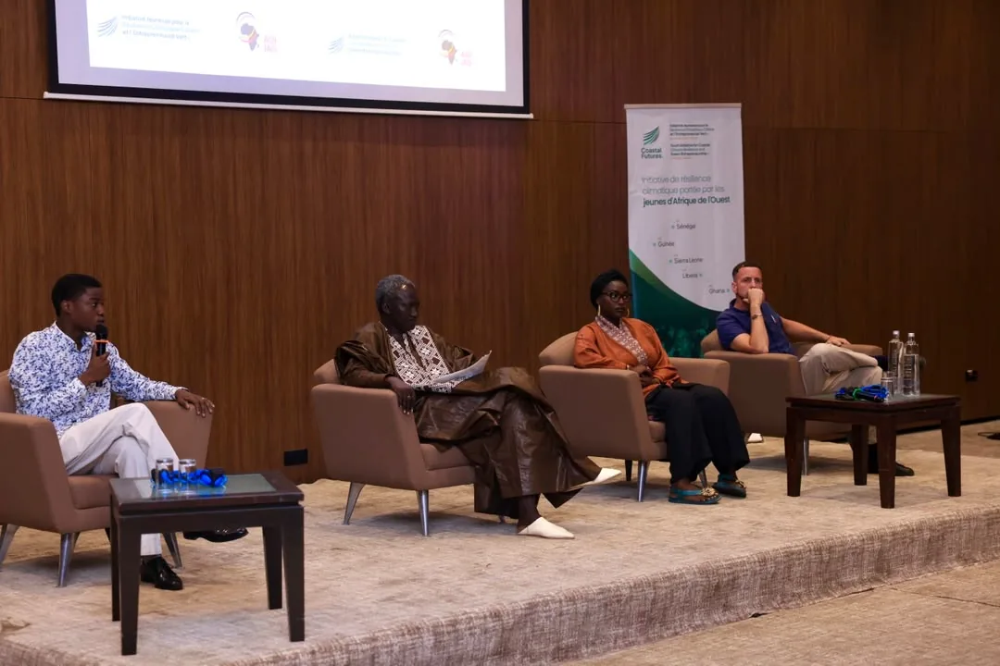
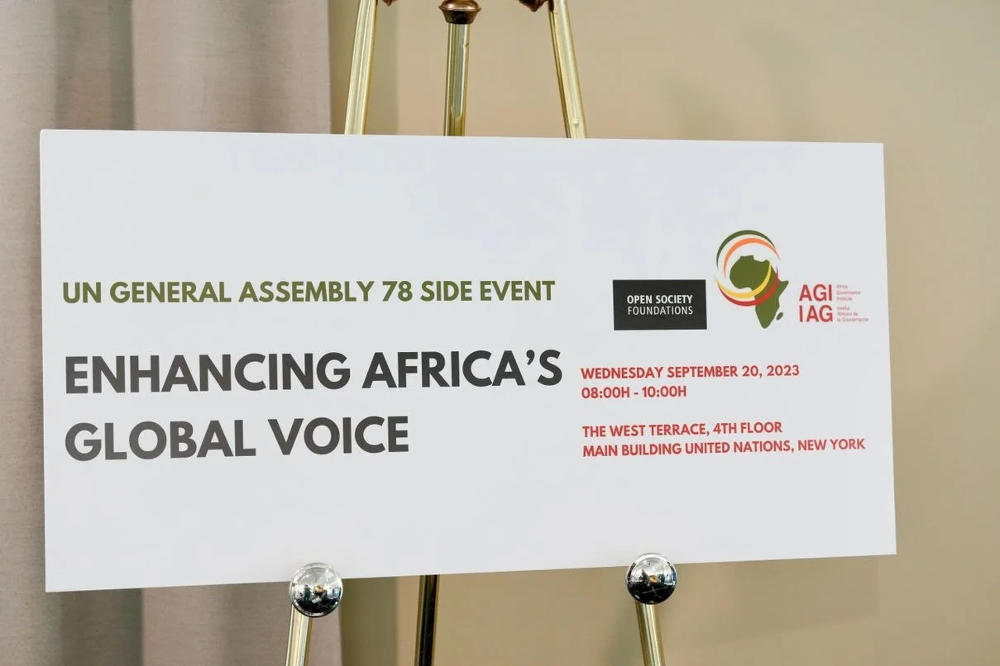
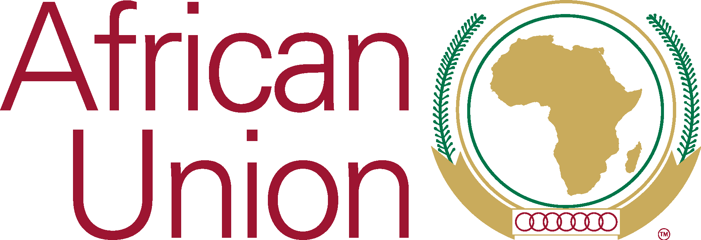
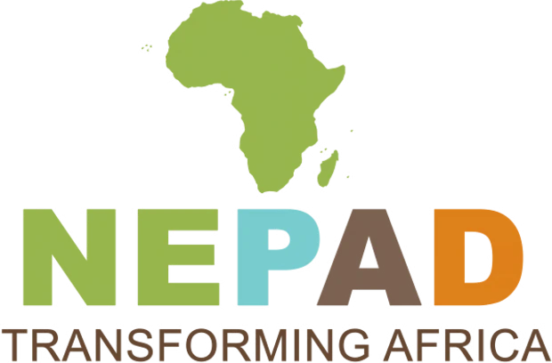
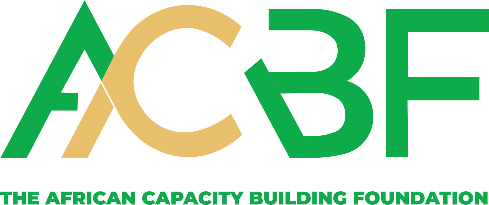
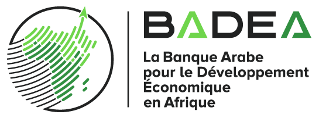
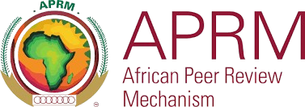

Dakar, Senegal
Official Launch
Coastal Futures
In Dakar, AGI launched Coastal Futures, a regional initiative for coastal climate resilience and green entrepreneurship for West African youth.
Read the reportGenerating innovative thinking on the governance challenges facing the African continent, and translating it into solutions for states, regional bodies, and civil society.

Dakar, SenegalIn Dakar, AGI launched Coastal Futures, a regional initiative for coastal climate resilience and green entrepreneurship for West African youth.
Read the reportThe Africa Governance Institute (AGI) is a pan-African centre of excellence which contributes to the development and the valorisation of innovative thinking on the governance challenges with which the African continent is faced, and helps implement solutions to be adopted by African regional and sub-regional Organisations, States, Non-State Actors and the Private Sector.
The initiative for the creation of AGI emerged in 2003 from discussions between the Chairman of the Commission of the African Union and the Regional Director for Africa of the United Nations Development Programme. The main idea was to create an AU-recognized centre of excellence, responsible for conducting cutting-edge research on all forms of governance and contributing to the advancement of developmental governance in Africa.
Read our storyFor democratic and developmental governance in Africa.
Cutting-edge research and innovative training that meet pressing governance issues identified in political dialogue.
Diffuse relevant information on governance across the continent through accessible knowledge platforms.


Facilitated work and provided technical support to DPA/AUC and other AU organs, helping develop products in key areas, including drafting the African Charter on Decentralization and Local Governance, and a framework of public administration reforms in post-conflict situations.
Co-hosted two rounds of the Dakar High-Level Dialogue on Democracy and Governance in Africa (DG Trends) and published the reports; organised, with the support of UNDP, two consultations on the draft AU discussion paper on Agenda 2063.
Organised, with the support of UNDP, capacity development for 60 high-level civil servants from African Francophone and Lusophone countries on public administration reform, within the framework of the African Charter on Values and Principles of Public Service and Administration.
Launched, with the support of UNDP and AfDB, a new resource centre and expert mapping that includes 350 profiles of high-level African experts and Africanists (diaspora included) and institutions, on both visible and hidden interfaces.
From the African Union and NEPAD to the UN Development Programme, the African Capacity Building Foundation, the APRM, BADEA, ECA and Open Society Foundations, our work is sustained through deep, long-running partnerships.




